2. 多通道接入与智能路由
内置 Go 语言 SMPP 网关（长连接 / 心跳保活 / 自动重连）；多供应商多通道并存；按国家、价格、优先级、客户分组自动选路；通道-客户专属绑定；SMPP / HTTP 双路实时回执（DLR）。

下文每个核心模块均附系统真实运行界面截图。出于隐私保护，客户名称、手机号、账号、余额、价格、供应商等敏感字段已做模糊处理；规模类统计数字予以保留。
以下为运营方 / 平台管理员视角的控制台界面。
主账户 + 子账户分权分额，API Key 多 Key 独立限额，灵活套餐资费，实时余额计费与预警，客户自助门户。支持短信 / 语音 / 数据多业务线统一管理。
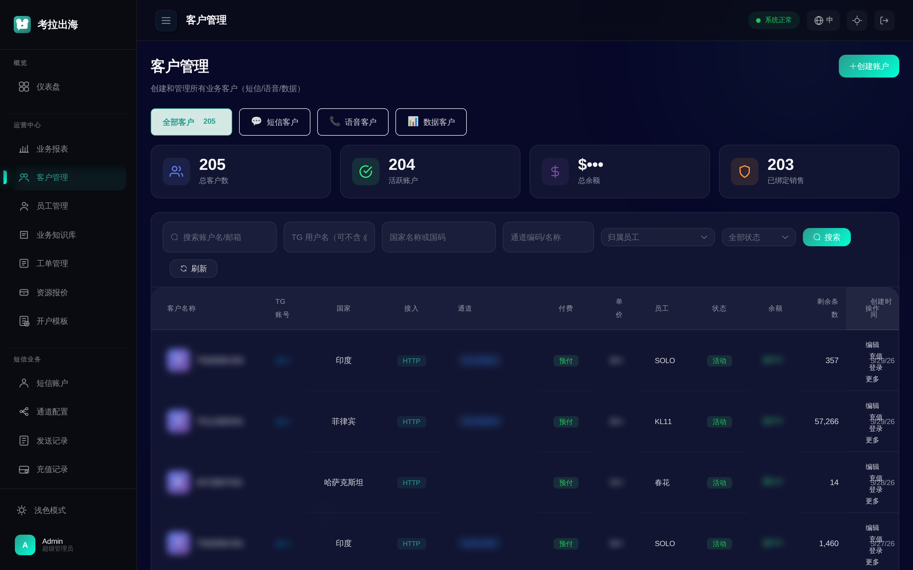
内置 Go 语言 SMPP 网关（长连接 / 心跳保活 / 自动重连）；多供应商多通道并存；按国家、价格、优先级、客户分组自动选路；通道-客户专属绑定；SMPP / HTTP 双路实时回执（DLR）。
标准 HTTP API + API Key 鉴权；CSV 批量发送（自动分片 / 排队 / 限速，支持几十万级）；定时发送；平台与私有模板；短链追踪与点击统计；失败可沿原通道重发。
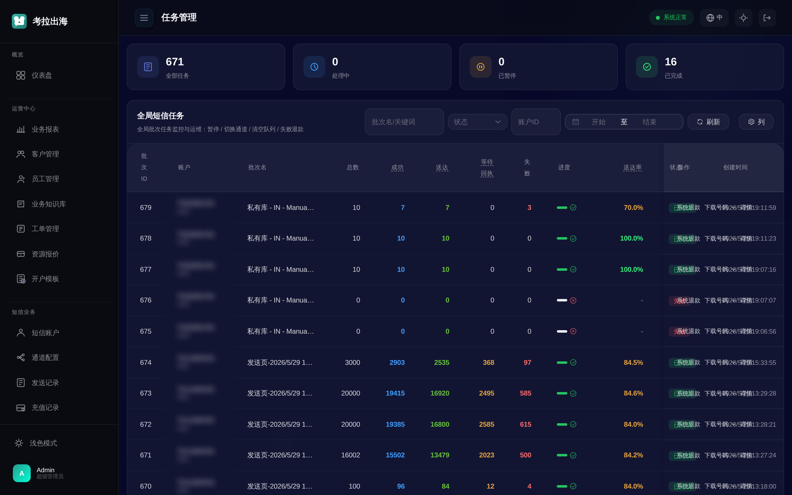
多维度（客户 / 员工 / 供应商 / 通道 / 国家）业务统计；发送量、收入、利润、成功率趋势分析；可导出。

号码库 / 私有号码库管理，商品、订单、销售体系，支持号码数据交易场景的全流程运营。
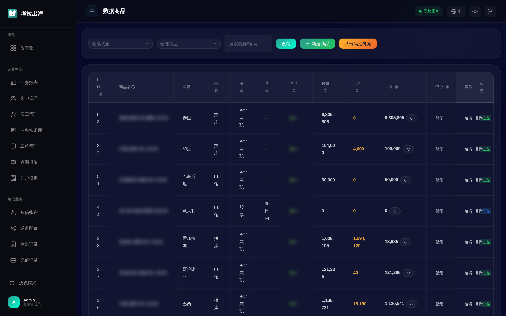
客户咨询、故障申报、需求对接的工单化处理，支持附件与状态流转。
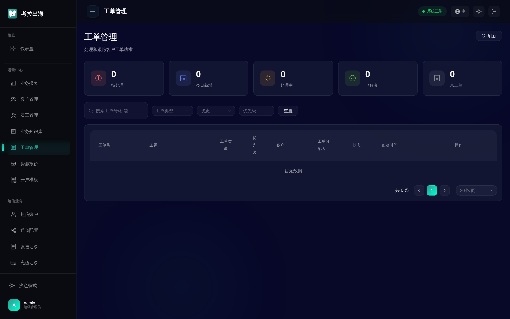
业务知识沉淀与检索，配合 Telegram 商务机器人提供智能问答支撑。
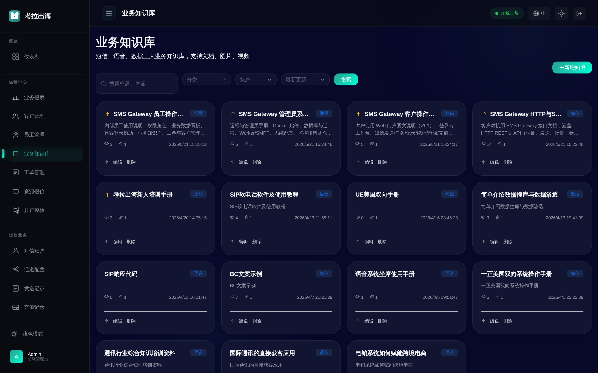
三级管理员角色（super_admin > admin > staff），细粒度权限控制，员工归属与客户分配。
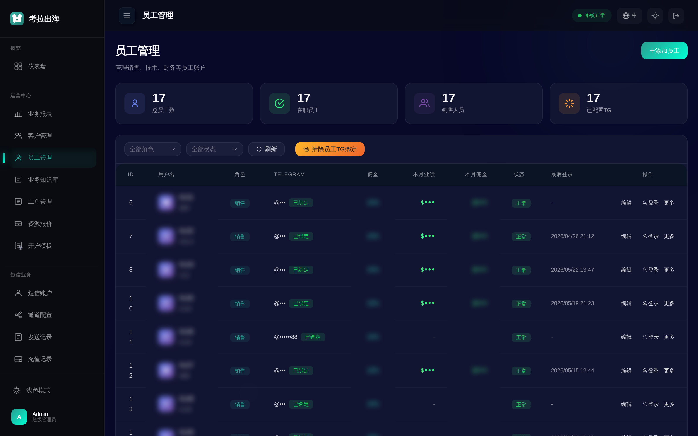
预设账户配置模板，一键套用通道、资费、限额，快速批量开户。
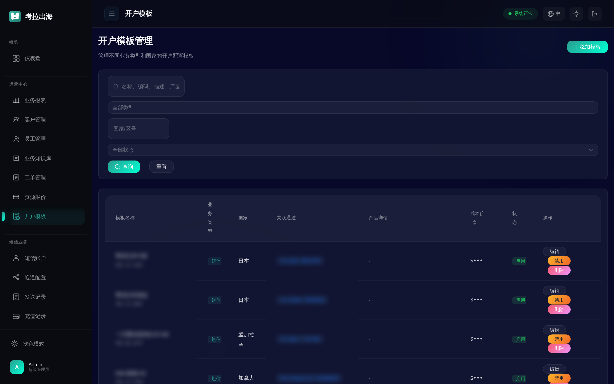
33 项系统配置集中管理；敏感配置默认锁定、二次确认才可改；全量操作审计与配置变更时间线；登录日志与安全日志；JWT + API Key 双鉴权体系。

此外系统还内置 Telegram 商务机器人（商务对接 / 客户咨询 / 发送辅助）与 AI 辅助接口，业务流程可在 IM 内闭环。
每个客户拥有独立的自助门户：自助发送、查记录、看统计、管理通道与余额，无需平台人工介入。下图以演示账号呈现。
今日 / 本周 / 本月发送量、账户余额、剩余条数、最近发送一目了然；快捷入口直达发送、记录、统计。
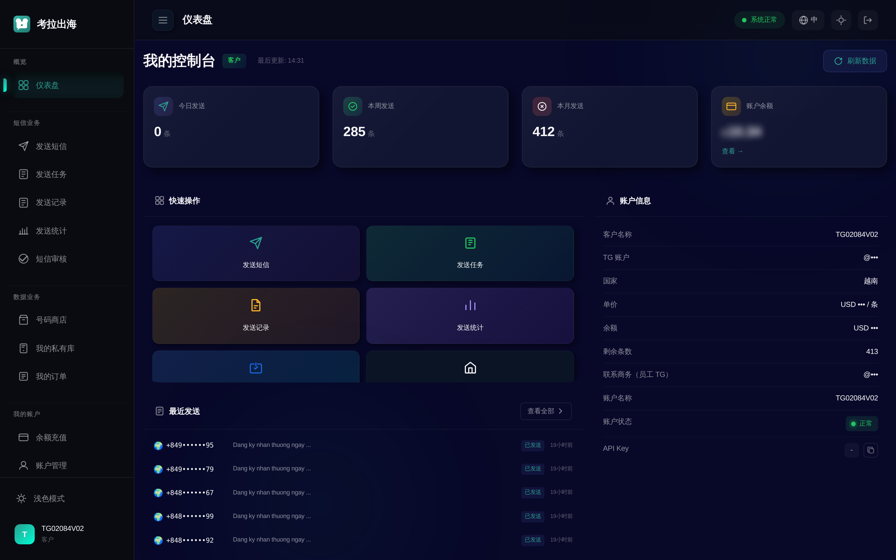
在线编辑短信内容，支持变量（序号 / 号码 / 国家 / 日期 / 随机码 / 自定义）、模板、短链转换、智能生成；手动录号 / 数据商店购买 / 私有库载入多种取号方式；实时手机预览与计费预估。
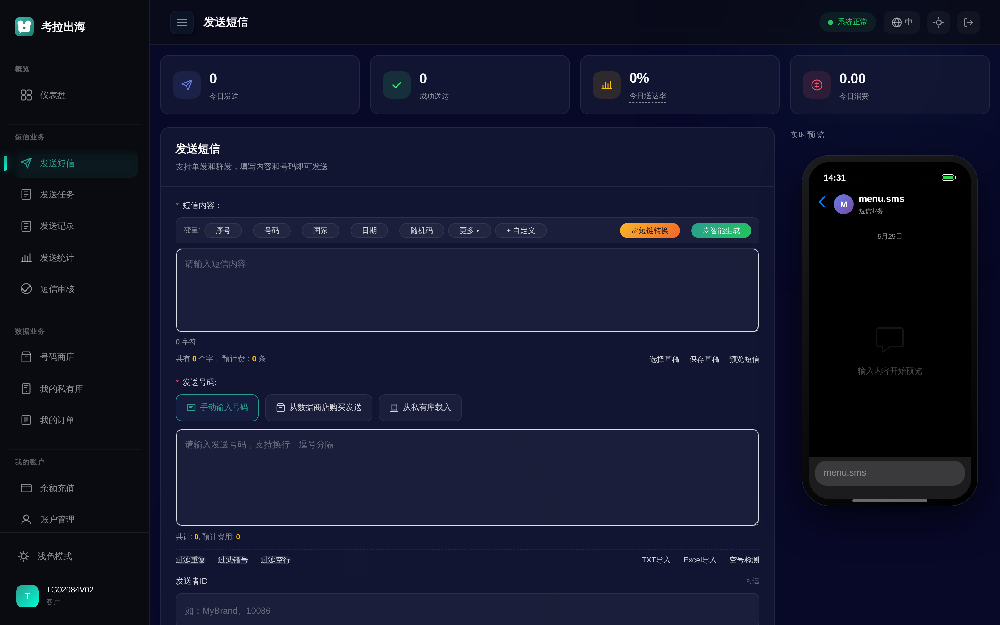
上传号码文件批量发送，任务自动分片、排队、限速，进度与结果实时跟踪。
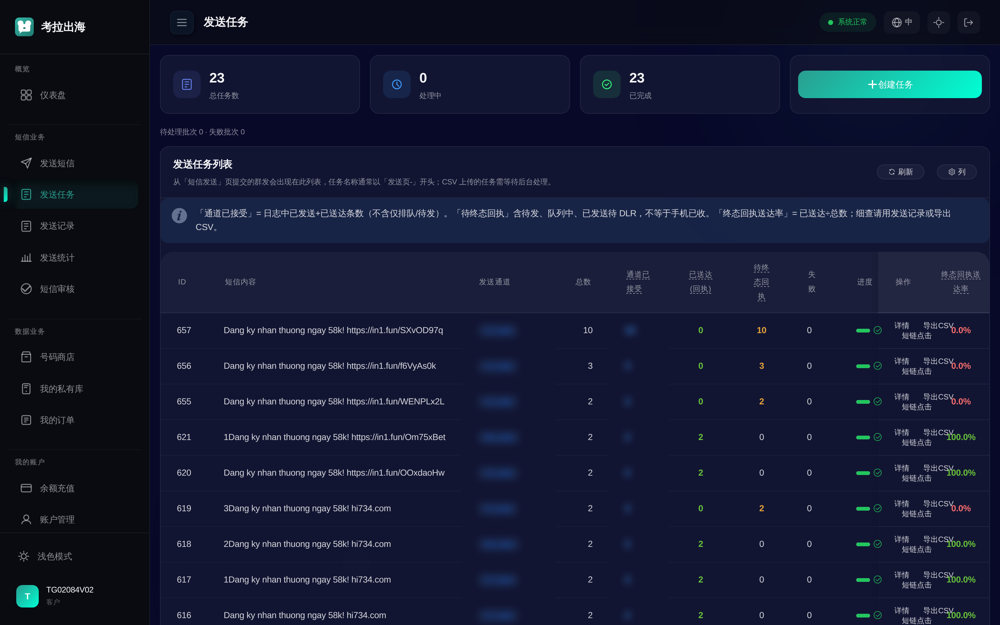
逐条发送记录（状态 / 通道 / 国家 / 回执 / 费用 / 时间）可检索可导出；多维发送统计与成功率分析。
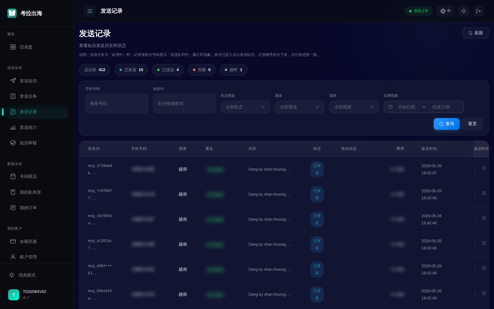
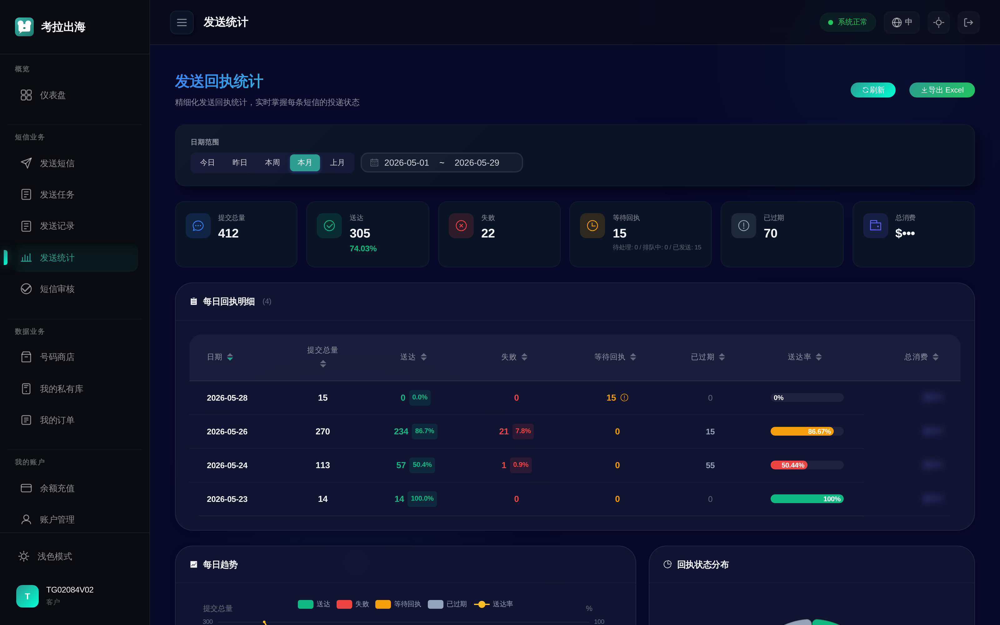
客户可查看可用通道、协议、速率与价格，透明可控。
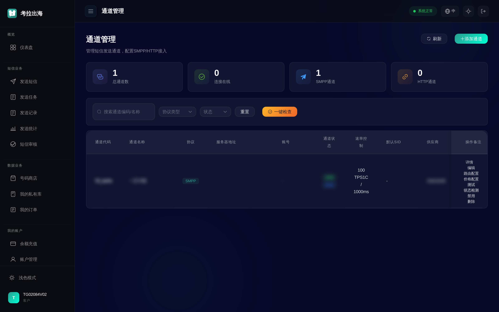
| 层 | 技术选型 |
|---|---|
| 后端 API | Python FastAPI（全异步） |
| 任务调度 | Celery + RabbitMQ（发送 / 回执 / 结果 / 数据 / Webhook 多队列） |
| 前端 | Vue 3 + Vite（中英双语、响应式、深浅色主题） |
| 数据库 | MySQL 8 + ProxySQL 连接池（发送日志按月分区，支持亿级） |
| 缓存 | Redis 7 |
| SMPP 网关 | Go 独立高并发长连接服务 |
| 部署 | Docker Compose 一键编排，全容器化 |
特点：全容器化交付、水平可扩展、读写分离、消息队列削峰、关键表分区。单机即可起步，业务增长后平滑横向扩容。
| 维度 | 方案① 源码出售 | 方案② 部署 + 永久授权 | 方案③ 部署 + 1 年授权 |
|---|---|---|---|
| 交付物 | 全部源代码 + 部署文档 | 部署好的运行环境 | 部署好的运行环境 |
| 源代码 | ✓ 完整拥有，可二次开发 | ✗ 不含源码 | ✗ 不含源码 |
| 使用期限 | 永久 | 永久 | 1 年（可续费） |
| 授权绑定 | 无锁，完全自主 | 绑定服务器 / 域名，永久有效 | 绑定服务器 / 域名，1 年到期 |
| 二次开发 | ✓ 自由 | 需由我方进行 | 需由我方进行 |
| 转售 / 分发 | 可协商（建议授权约束） | ✗ 不可 | ✗ 不可 |
| 后续升级 | 自行维护（可选维保） | 视协议（建议另签维保） | 授权期内含安全更新 |
| 技术支持 | 交付期支持 | 可选维保 | 授权期内含支持 |
| 适合客户 | 有技术团队、要长期自主可控 | 长期使用、不碰代码 | 小成本试跑 / 短期项目 |
| 价格定位 | 最高（买断核心资产） | 中（永久使用权） | 入门（年费门槛最低） |
报价梯度建议：源码 ≫ 永久授权 ＞ 1 年授权。1 年授权形成持续年费收入；到期可补差价平滑升级为永久授权。
说明：本文档所有界面均为系统真实运行截图；客户名称、手机号、账号、余额、价格、供应商等隐私 / 敏感信息已做模糊处理。